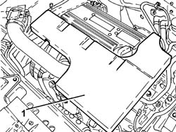
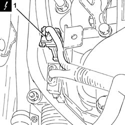
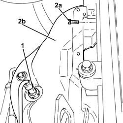
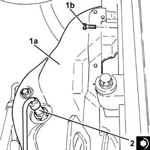
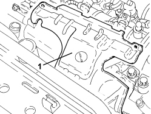
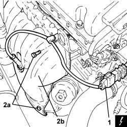

1072C44 EXHAUST MANIFOLD HEAT SHIELD - R+R
- Path
- Procedures > 10 ENGINE > 1072 INLET AND EXHAUST MANIFOLDS > 1072C EXHAUST MANIFOLDS > 1072C44 EXHAUST MANIFOLD HEAT SHIELD - R+R
- Kind
- repair procedure (removal / refitting; the operation number is the code)
- Applies to
- all engines; all production periods
- Interactive page
- https://sloeber94.github.io/elrnDB-fCrm/en/#/194000356
Applies to: engines: 2.2; all production periods
 Removing
Removing
 Refitting
Refitting- Position the vehicle on a lift.
- Make sure that the ignition key is in the OFF position, then disconnect the battery terminal (-).
Description | Connector | |
|---|---|---|
- | Battery |
1. Remove the soundproof cover secured to the engine by three pins.

Applies to: engines: 2.2; all production periods
1. Disconnect the electrical connection for the front Lambda sensor to the catalytic converter.
Description | Connector | |
|---|---|---|
1 | Lambda sensor on catalyzer |

Applies to: engines: 2.2; all production periods
1. Unscrew and remove the front lambda sensor from the catalytic converter.
2. Undo bolts (2a) and remove the exhaust manifold heat shield (2b).

Applies to: engines: 2.2; all production periods
Refitting
Removing1. Place the exhaust manifold heat shield (1a) back in its housing and secure it using the bolts (1b).
2. Position the front Lambda sensor in its housing on the catalytic converter and tighten it to the recommended torque.
Component | Fastening | dia | Value (daNm) | Validity |
|---|---|---|---|---|
Front Lambda sensor to catalytic converter | - (with special black grease) | M18 x 1.5 | (exhaust manifold with catalytic converter side) 4.0 | 2.2 |

Applies to: engines: 2.2; all production periods
- Connect the electrical connection for the front Lambda sensor to the catalytic converter.
- Refit the soundproofing cover in its seat and secure to the engine with the three pins.
- Connect the negative battery terminal.
- Remove the vehicle from the lift.
Applies to: engines: 1.9 JTD 8v, 1.9 JTD 16v; all production periods
Removing
Refitting- Position the vehicle on a lift.
Op. 1016A10 SOUND-PROOFING COVER - R.R
Op. 5530B52 BATTERY SUPPORT/DRIP TRAY - R.R
Op. 1048B19 TURBOCHARGER AIR OUTLET HOSE -R.R.
Op. 1048A42 SLEEVE FROM FLOW METER TO TURBO CHARGER AIR INLET PIPE - R + R
Op. 7055B54 UNDER ENGINE PROTECTION/GUARD - R.R.
Op. 1048A50 TURBOCHARGER AIR INTAKE PIPE - R.R.
Op. 1048A10 AIR FILTER ASSEMBLY - R.R.
Op. 1084A16 OIL DIPSTICK PIPE - R.R
Op. 1088D24 WATER PUMP RIGID COOLANT INLET PIPE - R.R.
1. Remove the exhaust manifold heat shield.

Applies to: engines: 1.9 JTD 8v, 1.9 JTD 16v; all production periods
Refitting
Removing- Place the exhaust manifold heat shield in its housing.
Op. 1088D24 WATER PUMP RIGID COOLANT INLET PIPE - R.R.
Op. 1084A16 OIL DIPSTICK PIPE - R.R
Op. 1048A10 AIR FILTER ASSEMBLY - R.R.
Op. 1048A50 TURBOCHARGER AIR INTAKE PIPE - R.R.
Op. 7055B54 UNDER ENGINE PROTECTION/GUARD - R.R.
Op. 1048A42 SLEEVE FROM FLOW METER TO TURBO CHARGER AIR INLET PIPE - R + R
Op. 1048B19 TURBOCHARGER AIR OUTLET HOSE -R.R.
Op. 5530B52 BATTERY SUPPORT/DRIP TRAY - R.R
Op. 0010T20 ENGINE COOLANT - CHANGE
Op. 1016A10 SOUND-PROOFING COVER - R.R
- Remove the vehicle from the lift.
Applies to: engines: 2.4 JTD 20v; all production periods
- On this version it is not possible to remove/refit the exhaust manifold heat shield on the car.
To perform this operation, remove/refit the power unit
Op. 1004B14 POWER UNIT WITH AUTOMATIC TRANSMISSION R + R
and then work at the bench, customising the engine service procedures for this operation.
Applies to: engines: 1.8; all production periods
Removing
RefittingOp. 1084A16 OIL DIPSTICK PIPE - R.R
1. Disconnect the electrical connection for the front Lambda sensor to the catalytic converter.
Description | Connector | |
|---|---|---|
1 | Lambda sensor on catalyzer |
2. Undo the upper and lower bolts (2a) securing the heat shield (2b) to the exhaust manifold and remove it.

Applies to: engines: 1.8; all production periods
Refitting
Removing- Place the heat shield back in its housing and secure it to the exhaust manifold using the bolts.
- Connect the electrical connection for the front Lambda sensor to the catalytic converter.
Topics linked from this page (14)
- 0010T20 ENGINE COOLANT - CHANGE
- 1004B14 POWER UNIT WITH AUTOMATIC TRANSMISSION R + R
- 1016A10 SOUND-PROOFING COVER - R.R
- 1048A10 AIR FILTER ASSEMBLY - R.R.
- 1048A42 SLEEVE FROM FLOW METER TO TURBO CHARGER AIR INLET PIPE - R + R
- 1048A50 TURBOCHARGER AIR INTAKE PIPE - R.R.
- 1048B19 TURBOCHARGER AIR OUTLET HOSE -R.R.
- 1084A16 OIL DIPSTICK PIPE - R.R
- 1088D24 WATER PUMP RIGID COOLANT INLET PIPE - R.R.
- 5530B10 BATTERY - R+R
- 5530B52 BATTERY SUPPORT/DRIP TRAY - R.R
- 7055B54 UNDER ENGINE PROTECTION/GUARD - R.R.
- A001 BATTERY
- K017 LAMBDA SENSOR ON CATALYZER
Topics that link to this page (10)
- 1016C10 SINGLE CYLINDER HEAD - R.R. AND REPLACE GASKET
- 1028H20 PISTON WITH CONNECTING ROD - R.R
- 1064A27 PIPE BETWEEN VACUUM RESERVOIR AND ACTUATOR CONTROL SOLENOID VALVE - R.R.
- 1072C16 EXHAUST MANIFOLD WITH CATALYTIC CONVERTER - R.R.
- 1080B40 CATALYTIC PRE-CONVERTER - R.R
- 1080B62 CATALYTIC CONVERTER - R + R
- 1084B36 ENGINE OIL FILTER MOUNTING AND HEAT EXCHANGER - R.R
- 1084B40 ENGINE OIL DELIVERY PIPE TO TURBOCHARGER - R + R
- 1084B42 ENGINE OIL RETURN PIPE FROM TURBO - R + R
- 1088D24 WATER PUMP RIGID COOLANT INLET PIPE - R.R.